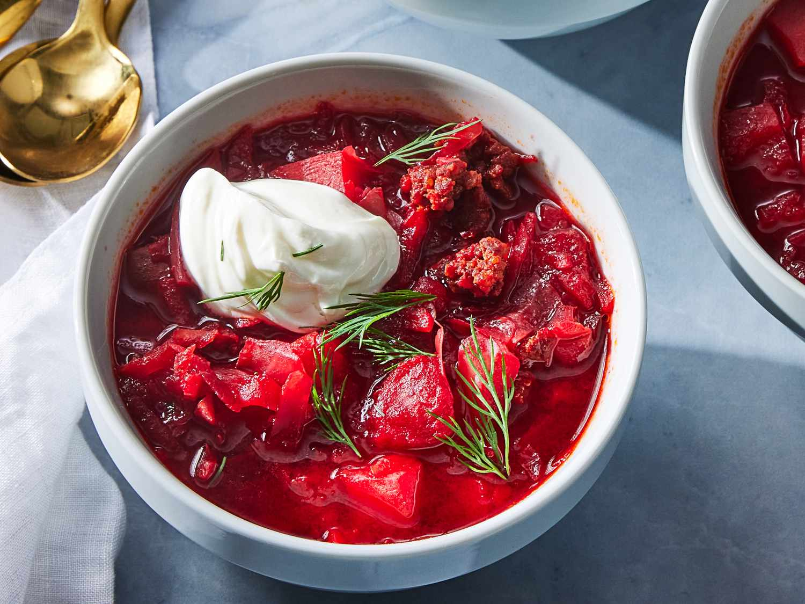
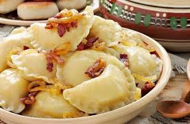
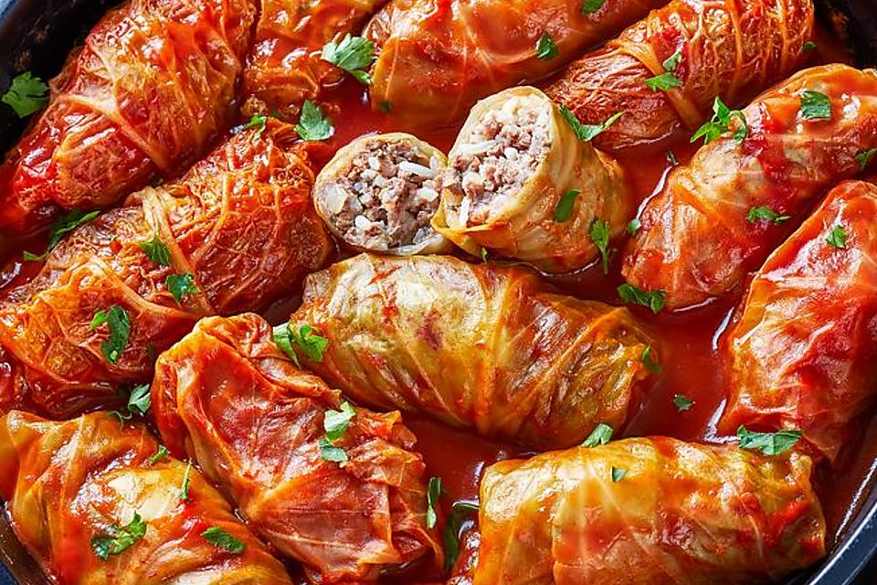

Borsch (борщ) is a traditional Ukrainian soup made with a rich base of beetroot, which gives it its signature deep red color, and a medley of vegetables such as cabbage, potatoes, carrots, and onions, often complemented by meat like beef or pork. This hearty dish is typically flavored with garlic, dill, and sour cream, which is added as a garnish before serving. Variations exist across regions and families, with some including beans or mushrooms. A staple of Ukrainian cuisine, borsch is celebrated not only for its comforting taste but also for its cultural significance, often served during holidays, family meals, and as a symbol of warmth and hospitality.
Borscht

Varenyky
Varenyky (вареники) are traditional Ukrainian dumplings made from a simple dough of flour, water, eggs, and salt, typically filled with a variety of savory or sweet ingredients. Savory fillings include mashed potatoes, cabbage, mushrooms, or meat, while sweet versions often feature cherries, sweetened cheese, or poppy seeds. Once filled, the dumplings are boiled until they float and can be served with sour cream, butter, or fried onions for savory options, or sugar, honey, or fruit syrups for sweet ones. A symbol of hospitality and celebration, varenyky hold a cherished place in Ukrainian culture, appearing at festive meals, weddings, and traditional gatherings, often with regional and familial variations.

Holubtsi

Holubtsi (голубці) are a traditional Ukrainian dish consisting of cabbage leaves stuffed with a savory filling of rice, meat (often pork or beef), and onions, sometimes enhanced with carrots or spices. The stuffed leaves are rolled, layered in a pot, and simmered in a tomato-based sauce, often enriched with sour cream. Variations exist, with some recipes substituting buckwheat or mushrooms for rice or meat. A comforting and versatile dish, holubtsi are a staple in Ukrainian cuisine, served at family meals, celebrations, and holidays, symbolizing warmth, nourishment, and the connection to cherished traditions.